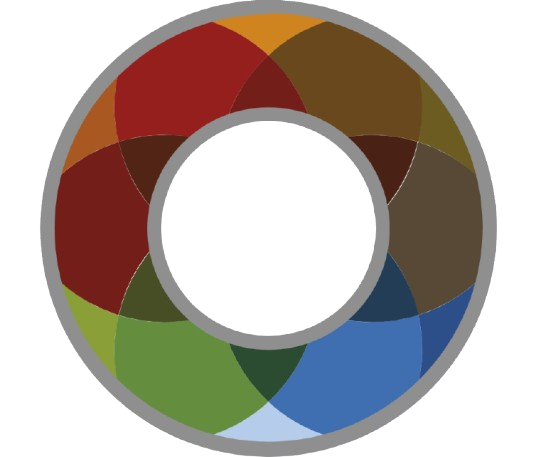

GERENCIA DE PRODUCCIÓN INDUSTRIAL
Estructura Organizativa Funcional — Grupo MP

GERENCIA DE PRODUCCIÓN INDUSTRIAL
Gestionar integralmente la operación industrial, coordinando la ejecución del proceso productivo, el abastecimiento y disponibilidad de materias primas, y la conservación y disponibilidad de los equipos, instalaciones, maquinaria móvil, herramental y recursos técnicos necesarios para la operación. Orientar la gestión al cumplimiento de los objetivos productivos y de calidad, asegurando la continuidad operativa y la coordinación entre las distintas áreas que intervienen en el proceso.
Brindar soporte técnico transversal a las distintas unidades de negocio del Grupo, desarrollando e implementando proyectos de mejora, optimización y modernización de procesos e instalaciones, con especialización en ingeniería eléctrica, electrónica, mecánica, automatización e instrumentación, y acompañando la incorporación de nuevas tecnologías.
PRODUCCIÓN
Asegurar la ejecución del cronograma de producción en tiempo y forma, gestionando los recursos y procesos para alcanzar los volúmenes previstos bajo estándares de calidad, productividad y eficiencia operativa.
MANTENIMIENTO INDUSTRIAL
Garantizar disponibilidad y confiabilidad de equipos e instalaciones industriales mediante mantenimiento preventivo, predictivo y correctivo, gestionando repuestos y recursos para la continuidad operativa.
MATRICERÍA Y TALLER
Asegurar disponibilidad de moldes de producción, mediante la fabricación mantenimiento, preparación y puesta a punto de dados, boquillas, y estructura. Brindar soporte de fabricación, mecanizado y reparación metalmecánica desde el taller.
MANTENIMIENTO VEHICULAR
Garantizar disponibilidad y confiabilidad de la flota y equipos móviles mediante planificación y ejecución del mantenimiento preventivo y correctivo, sosteniendo la capacidad de operación.
ABASTECIMIENTO
Asegurar el suministro continuo de materias primas a producción, gestionando de forma eficiente su extracción, preparación, acopio y logística según los requerimientos operativos.
ANALISTA DE DATOS Y PROCESOS
Analiza los procesos industriales mediante la gestión de datos, desarrollando indicadores y herramientas de control que permitan detectar desvíos, pérdidas y oportunidades de mejora. Realiza el seguimiento de la información productiva y de consumos, impulsa acciones de mejora y brinda soporte a la toma de decisiones de la Gerencia. Asume la coordinación operativa del área Industrial en ausencia del Gerente.
SUPERVISORES DE PRODUCCIÓN
Conduce integralmente la operación de la planta durante su turno, coordinando al personal y supervisando el proceso, sus parámetros y las condiciones de equipos e instalaciones. Es responsable del cumplimiento de los objetivos productivos del turno, la continuidad operativa, la calidad, el orden y la seguridad, tomando decisiones ante desvíos y coordinando las intervenciones necesarias con las áreas de soporte.
SUPERVISOR DE INSUMOS Y VAGONETAS
Asegura la disponibilidad y correcta gestión de los insumos requeridos por Producción, coordinando su recepción, almacenamiento y entrega. Gestiona el mantenimiento y reparación de las vagonetas para garantizar su disponibilidad operativa.
PERSONAL OPERATIVO
- Operarios de producción
- Mantenedores de turno
- Maquinistas y autoelevadoristas
- Personal de maestranza de planta
Personal de planta abocado a la operación continua de las líneas, mantenimiento de turno y logística interna:
- Operarios de producción
- Mantenedores de turno
- Maquinistas y autoelevadoristas
- Personal de maestranza de planta
PERSONAL DE MANTENIMIENTO DE VAGONETAS
- Fumistero
- Soldador
Personal especializado en la conservación, reparación y mantenimiento refractario y mecánico de vagonetas:
- Fumistero
- Soldador
ANALISTA DE MANTENIMIENTO
Planifica, coordina y controla la gestión de mantenimiento industrial, definiendo y actualizando los planes preventivos, criticidad de equipos y necesidades de repuestos y servicios. Gestiona la información técnica y el sistema de mantenimiento, analiza fallas e indicadores y coordina con Producción las ventanas de intervención, buscando mejorar la disponibilidad y confiabilidad de los equipos.
SUPERVISOR DE MANTENIMIENTO INDUSTRIAL
Supervisa y coordina la ejecución de las tareas de mantenimiento industrial, conduciendo al personal y asegurando la correcta realización de intervenciones preventivas y correctivas. Diagnostica fallas, asigna recursos y coordina con Producción las intervenciones y puestas en marcha, garantizando trabajos seguros, técnicamente adecuados y orientados a recuperar y preservar la disponibilidad de los equipos.
PERSONAL DE MANTENIMIENTO
- Mecánicos
- Electricistas
Personal técnico de ejecución mecánica y eléctrica para el mantenimiento preventivo y correctivo de planta:
- Mecánicos
- Electricistas
SUPERVISOR DE MATRICERÍA
Gestiona la fabricación, mantenimiento, ajuste y disponibilidad de los moldes de producción, asegurando su condición dimensional y funcional y su impacto sobre la calidad y estabilidad del proceso. Analiza problemas de producto y proceso vinculados a matricería, extrusión y materia prima, definiendo ajustes y acciones correctivas, y conduce técnicamente al personal del área. Planifica y supervisa los trabajos de mecanizado, fabricación y reparación metalmecánica realizados desde el taller.
PERSONAL DE MATRICERÍA
- Matricero de campo
- Matricero de taller
Personal operativo especializado en la preparación, ajuste y cambio de moldes en línea y taller:
- Matricero de campo
- Matricero de taller
PERSONAL DE TALLER MECÁNICO
- Tornero
- Fresador
- Soldador
Mecanizado, torneado, fresado y soldadura de piezas y componentes para matricería y planta:
- Tornero
- Fresador
- Soldador
SUPERVISOR DE MANTENIMIENTO VEHICULAR
Supervisa y coordina el mantenimiento preventivo y correctivo de las unidades móviles del área Industrial, conduciendo al personal y asegurando su disponibilidad, confiabilidad y seguridad. Planifica intervenciones, diagnostica fallas y define su resolución con recursos propios o externos, coordinando con las áreas usuarias las paradas y liberación de las unidades.
PERSONAL DE MANTENIMIENTO VEHICULAR
- Mecánicos vehiculares
Mantenimiento preventivo y correctivo integral de la flota vehicular y maquinaria pesada:
- Mecánicos vehiculares
SUPERVISOR DE ABASTECIMIENTO
Supervisa y coordina la extracción, acopio y logística de arcilla necesaria para abastecer a las plantas industriales. Gestiona los recursos de cantera y transporte, propios y de terceros, planificando la extracción y los viajes según las necesidades productivas y asegurando continuidad de abastecimiento, eficiencia operativa y condiciones seguras de trabajo.
PERSONAL OPERATIVO DE CANTERA
- Maquinistas
Operación de maquinaria pesada para extracción, destape y preparación de arcillas en cantera:
- Maquinistas
PERSONAL DE LOGÍSTICA INTERNA
- Choferes
Transporte y traslado de arcillas y materias primas entre cantera, acopios y plantas:
- Choferes